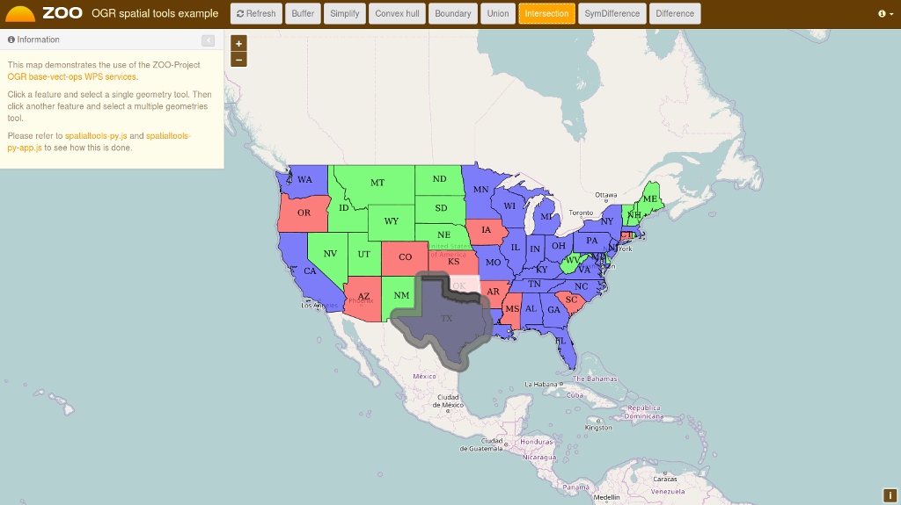
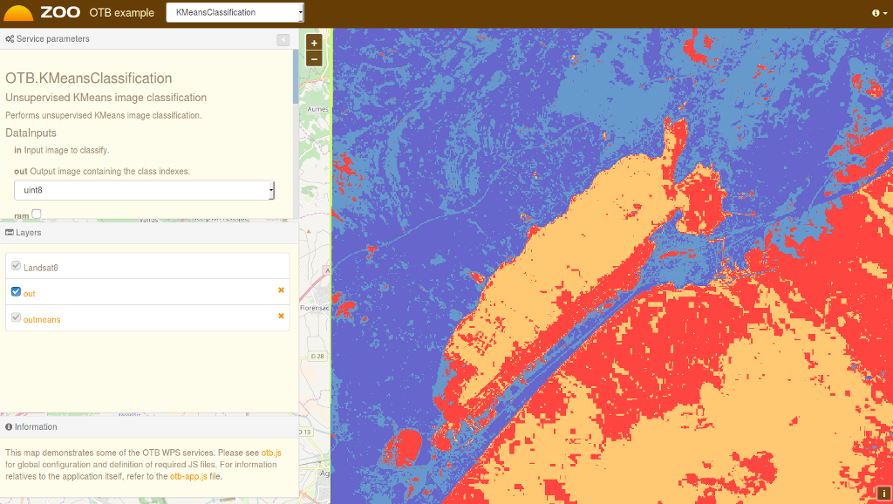

Zoo Project Quickstart¶
The ZOO-Project provides a developer friendly Web Processing Service (WPS) framework for creating and chaining Web Processing Services. A WPS provides web access to functions which run spatial algorithms.
Contents
Start ZOO-Project¶
From the Start menu, select .
Firefox will open the ZOO Project demonstration landing page. From here, you can select a demon application.

OGR spatial tools demo¶
On the ZOO Project demonstration landing page, click view on OGR spatial tools.
Click on the map to select a feature from the GeoServer WFS Server, the feature will be displayed in blue.
Click on simple geometry process like Buffer, Centroid, ConvexHull or Boundary and the result will be displayed in yellow.

Now select another feature near the first you’ve selected, then click on a multiple geometries process button like Union, Intersection, Symmetric Difference or Difference to get the result displayed in red on the map.

{kind=link}
CGAL triangulations demo¶
On the ZOO Project demonstration landing page, click view on CGAL triangulations.
Press the Voronoi or Delaunay button to display on your map the result of the WPS service execution, as shown below.

OTB Applications demo¶
On the ZOO Project demonstration landing page, click view on OTB application.
Fill the form on the left to configure the WPS service execution.
Once you have selected the values for your processing, press the Execute button at the bottom of the left form.
If you chose image/png as the output format, you will see the result of your processing displayed on the map. You can see below a sample KMeansClassification execution when selecting the image/png output format.

{kind=link}
What next?¶
- You can access the capabilities of the ZOO WPS Server:
- http://localhost/cgi-bin/zoo_loader.cgi?Request=GetCapabilities&Service=WPS
- For further questions you can contact the ZOO Project mailing list: zoo-discuss@lists.osgeo.org